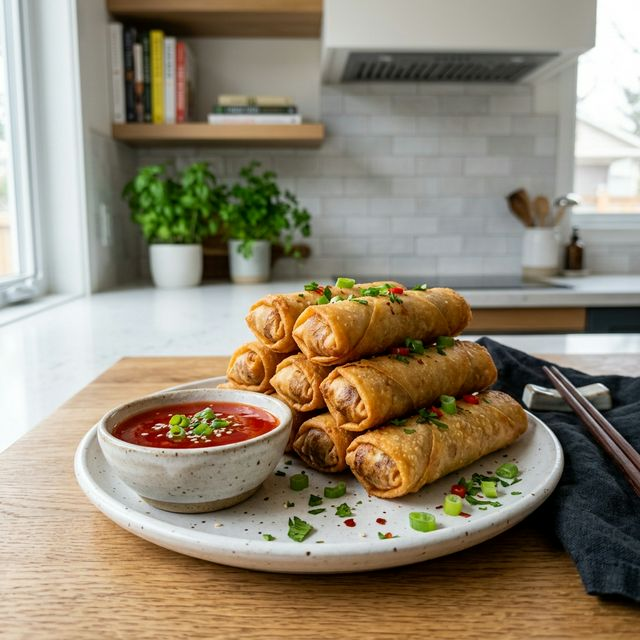

Lumpia Shanghai's Recipe

Description:
Lumpia Shanghai is a popular Filipino spring roll filled with a savory mixture of ground pork and finely chopped vegetables. It's deep-fried until golden and crispy, making it a beloved snack or party appetizer.
Ingredients:
- 1 lb ground pork
- 1 medium carrot, minced
- 1 small onion, minced
- 3 cloves garlic, minced
- 1 tsp salt
- 1/2 tsp black pepper
- 1 large egg, beaten (for sealing)
- 30-40 spring roll wrappers
- Cooking oil for deep frying
- Sweet and sour sauce for dipping
Directions:
- In a large bowl, mix ground pork, minced carrots, onion, garlic, salt, and pepper until well combined.
- Place about 1 tablespoon of the meat mixture on one edge of a spring roll wrapper.
- Roll the wrapper tightly towards the opposite edge. Brush the edge with egg wash to seal.
- Repeat until all the mixture is used. You can cut the rolls in half if they are too long.
- Heat oil in a deep pan or wok over medium heat.
- Deep fry the lumpia in batches until golden brown and crispy (about 5-7 minutes).
- Drain on paper towels. Serve hot with sweet and sour sauce. Enjoy!
Back to Home